If you think, "I know where this is. I've seen this before,"
please email me the image you think I'm looking for, along with a link to its source.
pursuing.following.tracking@gmail.com
It will be uploaded here.
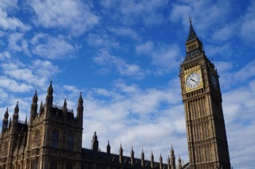
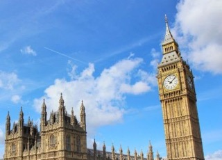
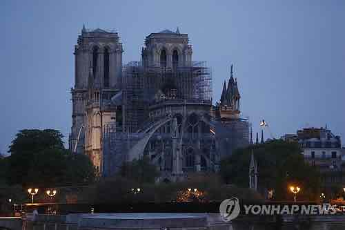
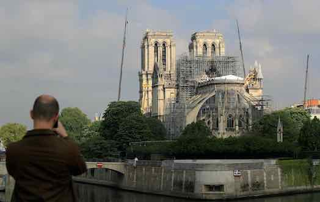
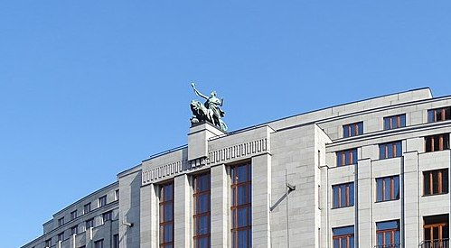
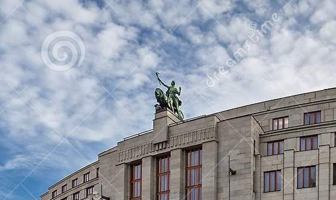
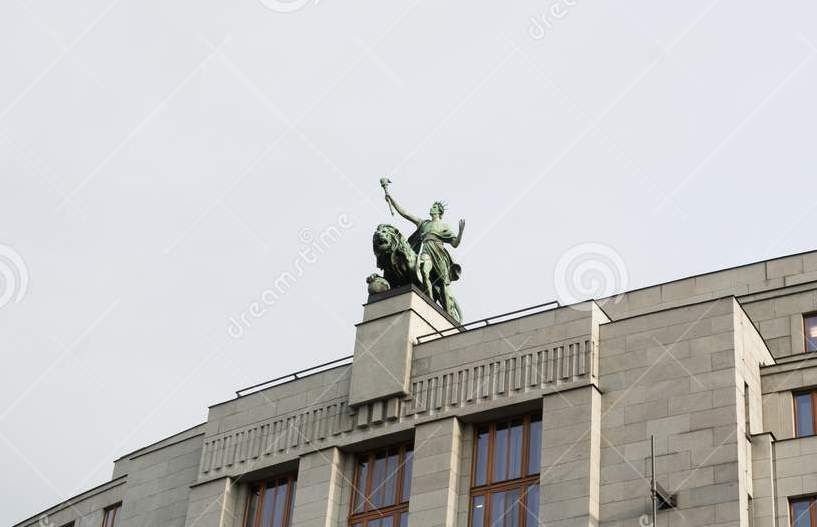
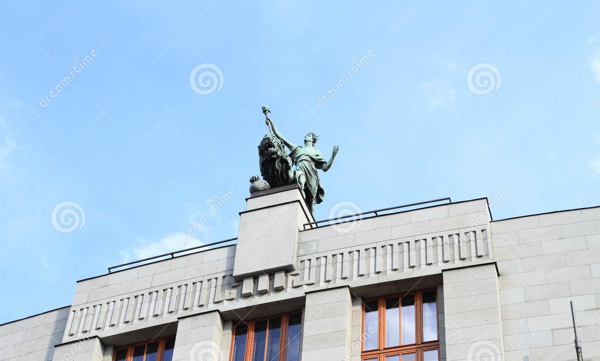
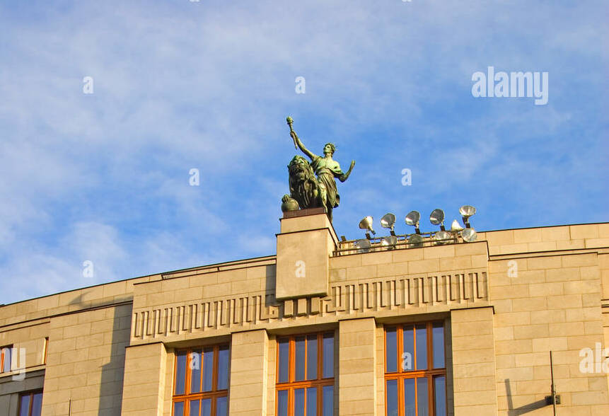
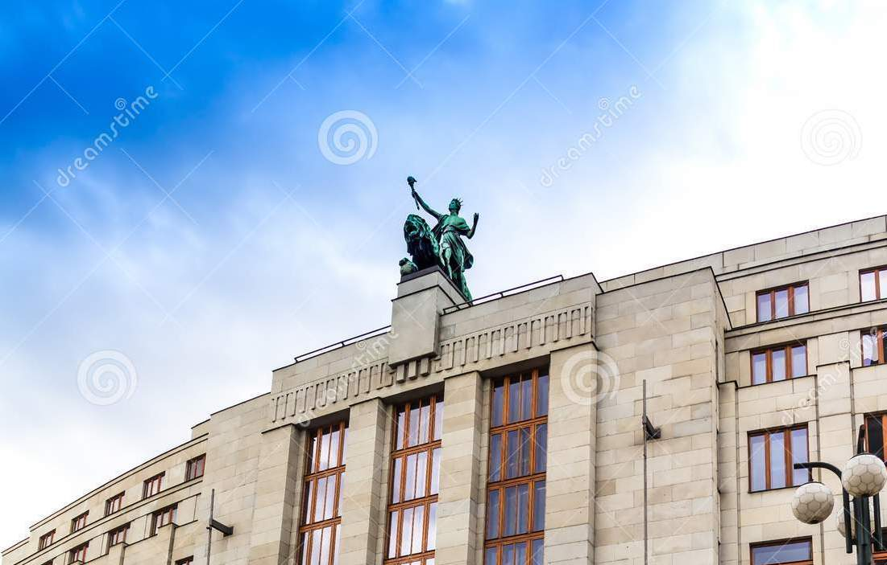
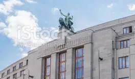
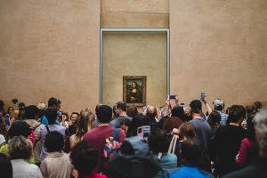
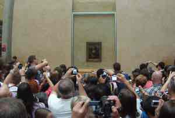
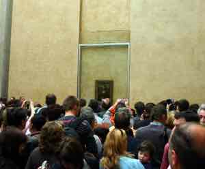
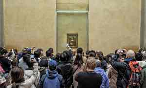
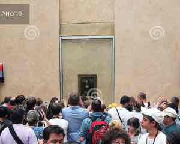
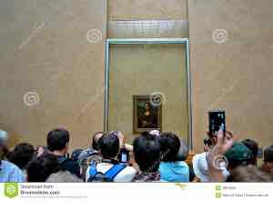
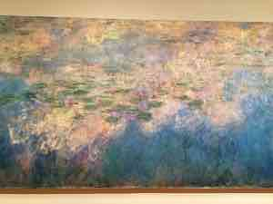
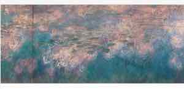
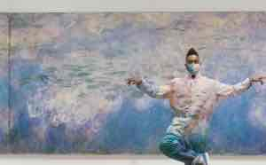
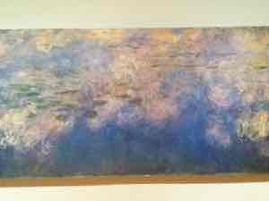
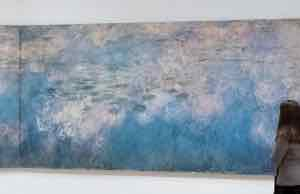
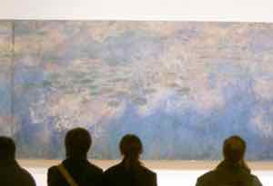
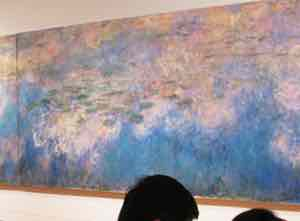
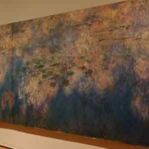
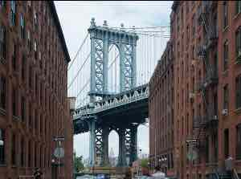
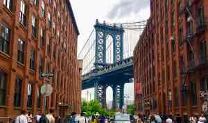
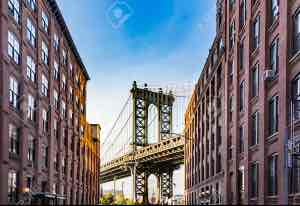
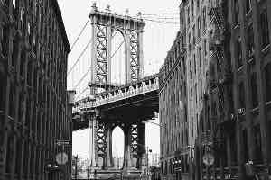
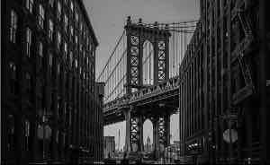
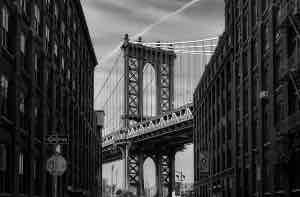
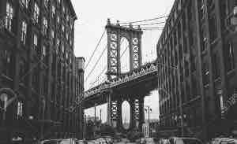
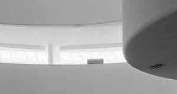
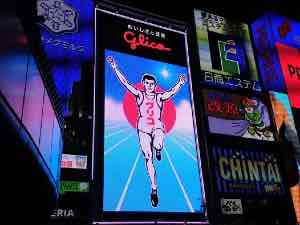
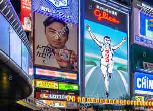
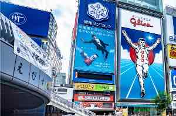
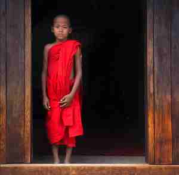
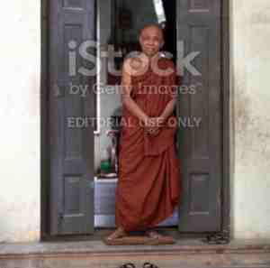
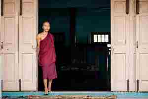
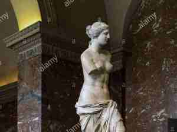
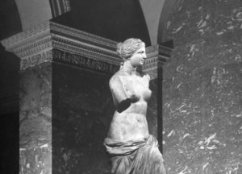
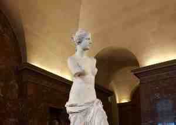
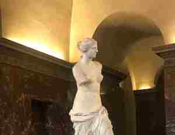
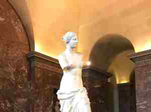
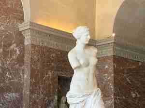
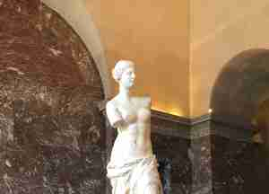
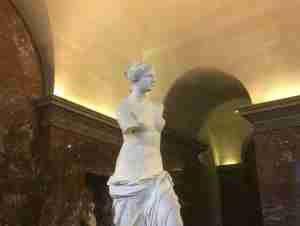
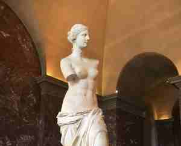
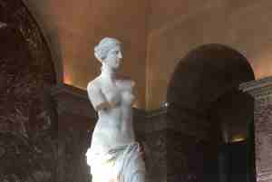
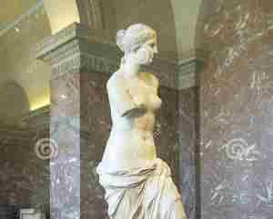